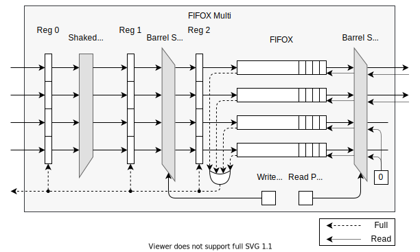

FIFOX Multi
- ENTITY FIFOX_MULTI IS
Synchronous FIFO queue, allowing for multiple write and read requests in each cycle. With
GenericsNwrite ports andMread ports it can perform 0 toNwrites and 0 toMreads simultaneously. Uses FIFOX internally (multiple, when required).
PortsGeneric
Type
Default
Description
DATA_WIDTH
natural
512
Width of data word stored in FIFO, in bits.
ITEMS
natural
512
Number of data words to fit in the FIFO.
WARNING: The actual maximum amount may be a bit larger due to input registers
Must be a power of two; will be automatically rounded up to the nearest power of two if it is not.
WRITE_PORTS
natural
4
Number of write ports
READ_PORTS
natural
2
Number of read ports
RAM_TYPE
string
“AUTO”
See
FIFOX_RAM_TYPEDEVICE
string
“ULTRASCALE”
See the documentation of the
DEVICEgeneric on theFIFOXentity instead.ALMOST_FULL_OFFSET
natural
0
Determines how few data words must be left free for
AFULLto be triggered.(
currently_stored>=(ITEMS- ALMOST_FULL_OFFSET)For architecture SHAKEDOWN counts number of cycles spent reading, not ITEMS!
ALMOST_EMPTY_OFFSET
natural
0
Determines how few data words must be stored for
AEMPTYto be triggered.(
currently_stored <= ALMOST_EMPTY_OFFSET)For architecture SHAKEDOWN counts number of cycles spent writing, not ITEMS!
ALLOW_SINGLE_FIFO
boolean
true
Allow instancing of a simple single FIFOX when
WRITE_PORTS==READ_PORTS==1This will lead to the removal of some control logic, but will also lower the component’s latency.
SAFE_READ_MODE
boolean
true
In safe read mode it is safe to attempt reading (setting
RDto'1') from ports, that are currently empty.This mode leads to worse timing and is often not needed, so it can be disabled here.
Port
Type
Mode
Description
CLK
std_logic
in
RESET
std_logic
in
=====
WRITE INTERFACE
=====
=====
DI
std_logic_vector(WRITE_PORTS*DATA_WIDTH-1 downto 0)
in
Data input
WR
std_logic_vector(WRITE_PORTS-1 downto 0)
in
Write enable for each input item
FULL
std_logic
out
Full flag
AFULL
std_logic
out
Almost full flag
=====
READ INTERFACE
=====
=====
DO
std_logic_vector(READ_PORTS*DATA_WIDTH-1 downto 0)
out
Data output
RD
std_logic_vector(READ_PORTS-1 downto 0)
in
Read confirm for each item
EMPTY
std_logic_vector(READ_PORTS-1 downto 0)
out
Empty flags (“invalid” for each item)
AEMPTY
std_logic
out
Almost empty flag
Block diagram
{kind=link}
Write interface behavior
The write interface allows you to write 0 to WRITE_PORTS items in each clock cycle. Valid input items are marked by setting the corresponding bit of WR to '1'.
The write requests are only performed when signal FULL has value '0'. When FULL is '0', no items can be written.
In case of multiple simultaneous writes the item on port 0 will be placed as the first in the FIFO and the item on port WRITE_PORTS-1 as the last.
Read interface behavior
The read interface allows you to read 0 to READ_PORTS items in each clock cycle.
Simultaneous read requests must be continuous from index 0 up. You cannot read items out-of-order.
- Example::
For
READ_PORTS == 4,RD[4-1 : 0]supports values"0000","0001","0011","0111"and"1111". All other permutations ofRDare forbidden and can lead to undefined behavior of the component!
Port EMPTY works as a “not valid” flag for each output Item.
When generic SAFE_READ_MODE is set to false , the user can only read from read ports, where EMPTY[i] == '0' .
When generic SAFE_READ_MODE is set to true, reading from an empty port will have no effect.